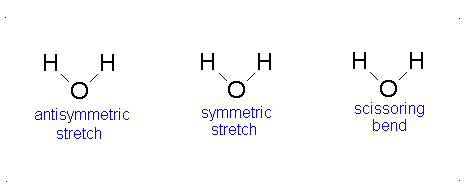
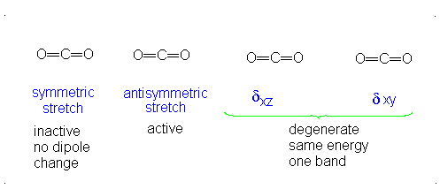
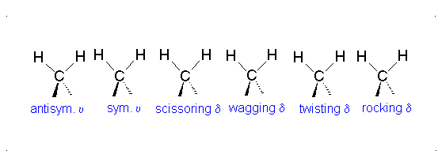
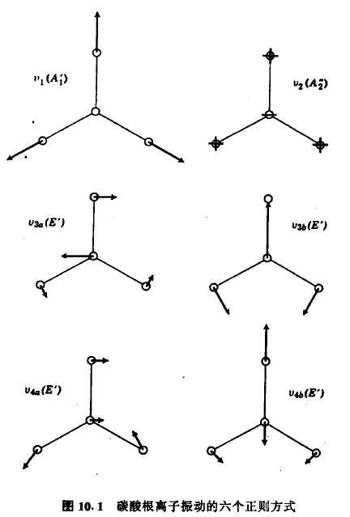
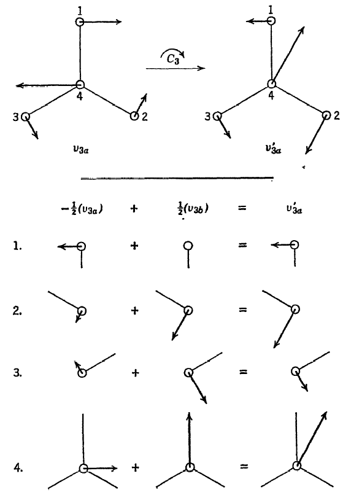
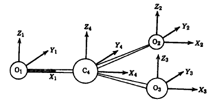
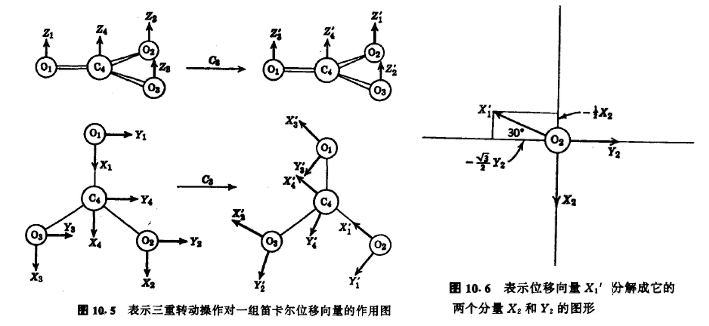
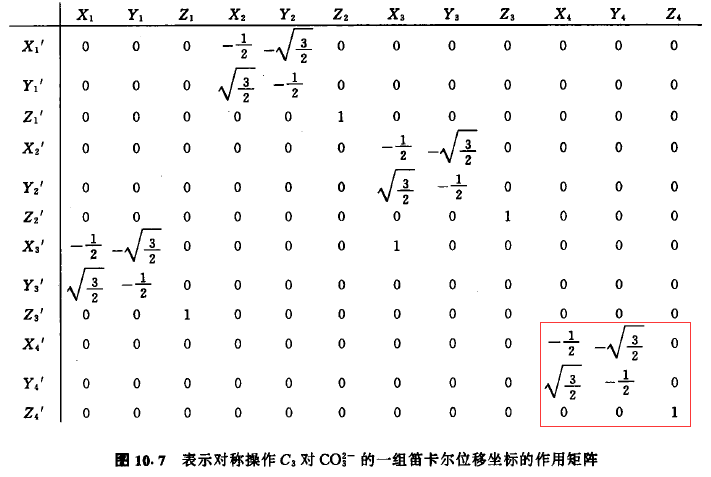
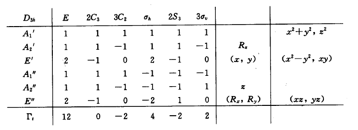

振动模式
- 一个拥有 n 个原子的非线性分子有 3n − 6 个振动正交模（vibrational normal mode），其余为 3 个转动、3 个移动。而线性的分子有 3n − 5 个振动正交模，只有 2 个转动。
- 原因：当所有原子都沿着x或y或z方向移动的时候，只是整个分子在移动，而不是分子在振动，因此要减去3个自由度；而当所有原子沿着x或y或z方向转动时，也不是分子振动，因此要再减去3个自由度（当线性的时候，没有分子轴的转动，所以是减去2）。
振动模式的分类
| 对称伸缩 （Symmetrical stretching） |
不对称伸缩 （Asymmetrical stretching） |
平面剪式运动 （Scissoring / Bending） |
|---|---|---|
 |
 |
 |
| 平面摆动 （Rocking） |
非平面摇摆 （Wagging） |
非平面扭转 （Twisting） |
 |
 |
 |
- 在摆动、摇摆与扭转模，原子间的键长不会改变。
举例



牛顿力学
将振动看作弹簧，则在谐波近似（harmonic approximation）中，服从胡克定律（Hooke’s law）：拉伸弹簧所需的力与拉伸量成正比：$F=-kQ$（k是力常数，单位为N/cm=dyn/cm）
牛顿第二定律：$F=ma=\mu \frac{d^{2} Q}{d t^{2}}$（$\mu$是约化质量，单位为g，一般来说，双原子为）
联立以上两个方程，可以解得：（A是最大振幅）
- 当用相对原子质量计算，频率用波数（）时，可以得到
在谐波近似中，力常数是势能的二阶导：$k=\frac{\partial^{2} V}{\partial Q^{2}}$
量子力学
动能算符：$\frac{p^{2}}{2m}$（$p=-i \hbar \frac{d}{d x}$）
薛定谔方程：$-\frac{h^{2}}{8 \pi^{2} \mu_{A B}} \frac{d^{2} \psi}{d x^{2}}+\frac{1}{2} k x^{2} \psi=E \psi$，解方程得到（n为量子数，取0，1，2……）：

- 当n变化时，能量变化为hv。
- 当分子吸收能量ΔE时，分子振动被激发，对应于振动的频率ν，根据关系ΔE = hν。当一个这样的能量量子被处于基态的分子吸收时，就会引发基本振动。
群论的应用
以$D_{3h}$点群的碳酸根$CO_3^-$为例，一共有3n-3=6种正则振动。

这些振动方式的对称都是属于某一个不可约表示：
- 对于$v_1$，所有对称操作都没有改变图中的箭头（向量），全是1，因此是$A^{\prime}_1$对称性
- 对于$v_2$，$E$，$C_3$和$\sigma_v$不会改变向量，而$C_2$，$\sigma_h$和$S_3$则变为负，因此符合$A^{\prime\prime}_2$
- 对于复杂一些，需要用和共同表示：
- 对于$E$，，用矩阵表示，则特征标为2；
- 对于，如下图：，，则为，特征标为-1
- 其他以此类推，符合

确定正则振动的对称性
- 通过给每个原子一个独立的笛卡尔坐标系，以该原子为原点，所有的x，y，z轴方向都相同，如下图：
 用每一个对称操作作用在这个分子上，用变换前的坐标表示变换后的坐标，比如$C_3$：

- 则：，可以得到特征标为0的矩阵：

对于$E$操作，对角线全是1，特征标为12。
更加简单的看是，只需要考虑没有移动到别的原子上的笛卡尔坐标系。因为它们处于对角线上。比如，，在都旋转到原子2上了，因此可以不用考虑。而原子4上的坐标仍然在原子4上，因此可以直接看原子4上的变换矩阵（红框部分）。
- 对于$C_2$操作绕着X轴旋转，只有原子1和原子4的坐标没有移走，而且X向量不发生改变，Z和Y分别变成负的，则特征标的数值为$(1-1-1)\times2=-2$
- 对于$\sigma_h$，每个原子都只有一个向量变成负的，则为$(1+1-1)\times4=4$
- 对于$S_3$，则是先$C_3$后再$\sigma_h$，所以就是$-1/2-1/2-1=2$
- 对于$\sigma_v$，两个原子不变，每个原子有一个向量变成负的，因此特征标为2
得到12个笛卡尔坐标产生的特征标后，进行分解：

- 扣除6个移动和转动，通过上表可以得知，跟x，y，z移动相关的为和，与x，y，z转动相关的是和，进行扣除：
通过内坐标看正则振动的贡献
- 选择三个C-O键的伸缩作为内坐标组，则特征标的顺序是3 0 1 3 0 1，进行分解可以得到，可以看出这两个振动方式包含一定程度的C-O振动。（也可以通过羰基六种正则振动的图验证，与C-O键伸缩振动相关的是）
- 选择三个OCO键角作为第二组内坐标组：
- 首先要注意所有坐标不是线性无关的。如果振动使得三个OCO键角同时增大或减小，振动是的对称性，但是这三个角在一个平面内不可能同时增大或减小，因此这个对称性是与键角的振动无关的。
- 同样按对称操作，则得到3 0 1 3 0 1，分解得到也是，但是的振动是冗余的要去掉
- 因此$E^{\prime}$的振动包含一定的OCO角的弯曲
- 还剩一个$A_{2}^{\prime\prime}$，因此它是与二面角有关的，即C-O键与离子平面间所成的角有变化，不包含C-O键长和平面内OCO键角的变化。
判断红外和拉曼活性
- 红外偶极辐射的吸收发生基频跃迁必须包含一个或多个非零的，，积分，这些积分与x，y，z有关。
- 拉曼散射至少需要一个非零的，是笛卡尔坐标的二元函数，即与，，，xy，yz，zx有关
- 因此通过特征标表，可知点群的振动中：
- 只具有拉曼活性：$A_{1}^{\prime}$和$E^{\prime\prime}$
- 只具有红外活性：$A_{2}^{\prime\prime}$
- 都有：$E^{\prime}$